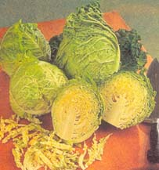
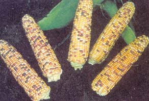
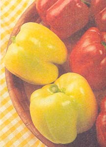
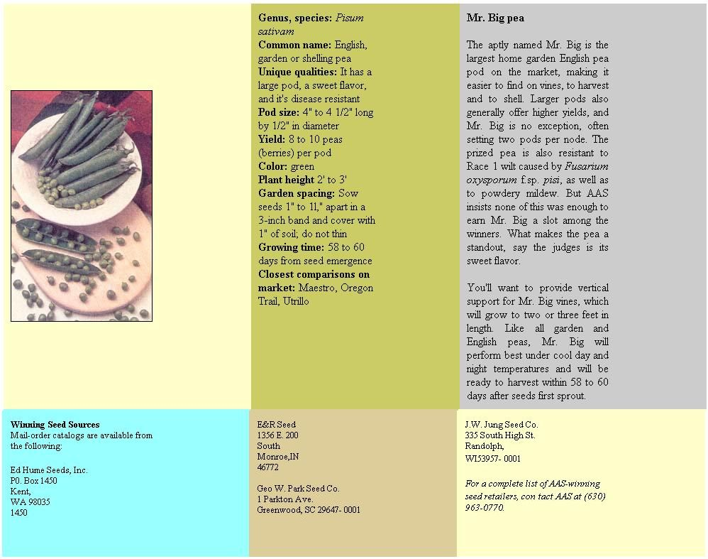

Issue # 178 - February/March 2000
Common name: cabbage
Unique qualities: It is the earliest known savoy cabbage and is decorative with a waffle-like leaf texture
Head size and weight: 6" to 8", 1 to 1 3/4pounds
Head shape: round or slightly pointed
Plant height: 10" to 12" Foliage color: green exterior, yellow-green interior
Garden spacing: 12" apart
Growing time: 55 days from transplant
Closest comparisons on market: Savoy Ace, Savoy King
You'll love this cabbage, which can be harvested in little more than half the time of most savoys on the market (55 days after transplanting in the garden, as compared to 100 growing days for most others). Savoy Express' sweet flavor makes it great for slaws or mixed in a salad of raw, fresh greens. And its diminutive size (under two pounds) means small families won't regularly find themselves tossing out half-eaten heads that have gone to rot.
Savoy Express can be grown in either spring or fall in most areas of North America. To grow from seed, sow indoors about five to six weeks ahead of when you think you'll be transplanting to the garden (after the threat of frost has passed). With its decorative, waffle-like leaf texture, the Savoy Express makes not only a tasty but a beautiful addition to vegetable and flower gardens alike.
Genus, species:Zea mays
Common name: sweet corn Unique qualities: multicolored kernels, sweet flavor
Cob size: 7" to 8" (16 to 18 rows)
Kernel colors: yellow, white, red, purple
Plant height: 84"
Ear height: 30"
Garden spacing: in rows 6" to 8" apart
Growing time: 79 days
Closest comparisons an market: Honey & Pearl, Appaloosa
Reminiscent of fall maple leaves, this unique bell pepper changes color as it grows and matures. The fruit begins life its a pale green or ivory color, proceeds to a pastel pink not unlike the shade of a white zinfandel wine, then finally turns a deep rosy red when fully ripened.
Blushing Beauty peppers can be picked at any color stage and will still taste sweet - perfect for fresh salads. Thick walls also make them ideal stuffing peppers.
The Blushing Beauty is resistant to the tobacco mosaic virus and three races of bacterial leaf spot. And its small stature (the plant only reaches about two feet high) makes it perfect for container gardening. Grow some Blushing Beauties on your back deck and enjoy the particle of changing colors.
One look inside the husk of an Indian Summer ear and you know you've got something special. The yellow, white, red and purple kernels make this corn almost too pretty to eat. But don't let that stop you. Indian Summer is, according to AAS, the first sweet corn with both multicolored kernels and a super-sweet flavor. Full-grown, the ears measure about eight inches long; ears harvested too soon may not show their peak colors, but as the ears mature, the colors become more vibrant and only intensify with cooking.
To ensure uniform germination, Indian Summer corn needs to be planted in soil that has warmed to about 60°F or better. For best (and consistent) results you'll want to isolate Indian Summer from other sweet corn varieties, either by planting at a distance of 500 feet, or by staggering the planting so as to guarantee a 14-day difference in maturity dates.
|
Genus, species: Brassica oleracea var. sabauda |
 |
 |
|
 |
 |
|